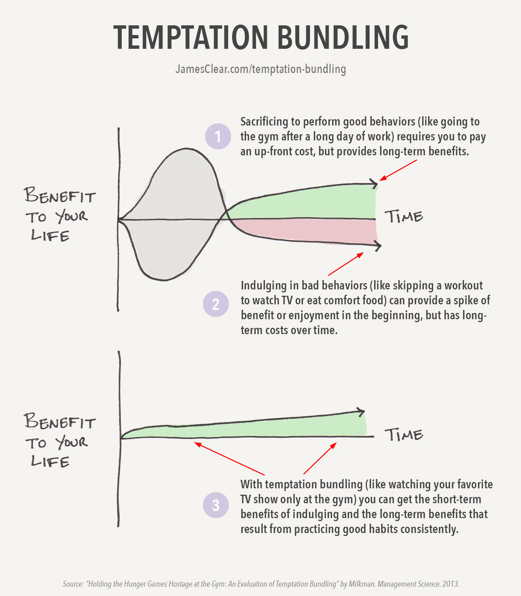

Willpower isn’t something you have or something you lack. It rises and falls. And while it’s impossible to maximize your willpower for every moment of every day, it is possible to make a few changes to your day and your routine so that you can get the most of your decisions and make consistent progress on the things that are important to you. In this guide, I will break down the benefits and science of willpower, explain why willpower fades, and arm you with some simple strategies to boost willpower.
You can click the links below to jump to a particular section or simply scroll down to read everything. At the end of this page, you’ll find a complete list of all the articles I have written on willpower.
I. The Benefits of Willpower
- What is Willpower?
- The Science of Willpower
- What Determines Your Ability to Exercise Willpower?
II. Why Willpower Fades
- Your Environment Drives Your Willpower
- How Sleep Deprivation Affects Willpower
III. Simple Strategies to Boost Willpower
- Develop a Ritual
- Use Temptation Bundling
- Plan for Failure and Chaos With the If/Then Technique
- The Power of Decision Elimination
The Benefits of Willpower
What is Willpower?
Let’s define willpower. Willpower is the ability to control oneself and the decisions one makes. It’s the ability to delay gratification and choose long-term rewards over short-term rewards.
Research supports the notion that willpower and the ability to delay gratification are vitally important for a sucessful, productive life.
Let’s talk about some of that research now.
The Science of Willpower
In the 1960s, a Stanford professor named Walter Mischel began conducting a series of important psychological studies.
During his experiments, Mischel and his team tested hundreds of children — most of them around the ages of 4 and 5 years old — and revealed what is now believed to be one of the most important characteristics for success in health, work, and life.
The experiment began by bringing each child into a private room, sitting them down in a chair, and placing a marshmallow on the table in front of them.
At this point, the researcher offered a deal to the child.
The researcher told the child that he was going to leave the room and that if the child did not eat the marshmallow while he was away, then they would be rewarded with a second marshmallow. However, if the child decided to eat the first one before the researcher came back, then they would not get a second marshmallow.
So the choice was simple: one treat right now or two treats later.
The researcher left the room for 15 minutes.
As you can imagine, the footage of the children waiting alone in the room was rather entertaining. Some kids jumped up and ate the first marshmallow as soon as the researcher closed the door. Others wiggled and bounced and scooted in their chairs as they tried to restrain themselves, but eventually gave in to temptation a few minutes later. And finally, a few of the children did manage to wait the entire time.
Published in 1972, this popular study became known as The Marshmallow Experiment, but it wasn’t the treat that made it famous. The interesting part came years later.
As the years rolled on and the children grew up, the researchers conducted follow up studies and tracked each child’s progress in a number of areas. What they found was surprising.
The children who were willing to delay gratification and waited to receive the second marshmallow ended up having higher SAT scores, lower levels of substance abuse, lower likelihood of obesity, better responses to stress, better social skills as reported by their parents, and generally better scores in a range of other life measures. (You can see the followup studies here, here, and here.)
The researchers followed each child for more than 40 years and over and over again, the group who waited patiently for the second marshmallow succeed in whatever capacity they were measuring. In other words, this series of experiments proved that the ability to delay gratification was critical for success in life.
And if you look around, you’ll see this playing out everywhere…
- If you delay the gratification of watching television and get your homework done now, then you’ll learn more and get better grades.
- If you delay the gratification of buying desserts and chips at the store, then you’ll eat healthier when you get home.
- If you delay the gratification of finishing your workout early and put in a few more reps, then you’ll be stronger.
… and countless other examples.
Success usually comes down to choosing the pain of discipline over the ease of distraction. And that’s exactly what delayed gratification is all about.
This brings us to an interesting question: Did some children naturally have more self-control, and thus were destined for success? Or can you learn to develop this important trait?
What Determines Your Ability to Exercise Willpower?
Researchers at the University of Rochester decided to replicate the marshmallow experiment, but with an important twist. (You can read the study here.)
Before offering the child the marshmallow, the researchers split the children into two groups.
The first group was exposed to a series of unreliable experiences. For example, the researcher gave the child a small box of crayons and promised to bring a bigger one, but never did. Then the researcher gave the child a small sticker and promised to bring a better selection of stickers, but never did.
Meanwhile, the second group had very reliable experiences. They were promised better crayons and got them. They were told about the better stickers and then they received them.
You can imagine the impact these experiences had on the marshmallow test. The children in the unreliable group had no reason to trust that the researchers would bring a second marshmallow and thus they didn’t wait very long to eat the first one.
Meanwhile, the children in the second group were training their brains to see delayed gratification as a positive. Every time the researcher made a promise and then delivered on it, the child’s brain registered two things: 1) waiting for gratification is worth it and 2) I have the capability to wait. As a result, the second group waited an average of four times longer than the first group.
In other words, the child’s ability to delay gratification and display willpower was not a predetermined trait, but rather was impacted by the experiences and environment that surrounded them. In fact, the effects of the environment were almost instantaneous. Just a few minutes of reliable or unreliable experiences were enough to push the actions of each child in one direction or another.
Why Willpower Fades
1. Your Environment Drives Your Willpower
If we buy a candy bar, we assume it is because we wanted a candy bar. The truth, however, is that many of the actions we take each day are simply a response to the environment we find ourselves in – just like the children in the Marshmallow Experiments.
Candy sales are very seasonal. Bulk candy purchases tend to be made around Halloween and other holidays, which means during the majority of the year candy never makes it onto the grocery list. Obviously, this isn’t what candy companies want since they would prefer to have sales continue throughout the year.
Because candy isn’t an item you are going to seek out during most trips to the grocery store, it is placed in a highly visible place where you’ll see it even if you aren’t looking for it: the checkout line.
The grocery stores are creating an environment that promotes buying candy. They have designed an environment that makes it harder for you to exercise willpower, bringing you face-to-face with a temptation you weren’t necessarily expecting or prepared for.
The good news is we can use their strategy for good, too. We can be architects of our own environments.
If you take just a little bit of time today to organize your room, your office, your kitchen, and other areas, then that adjustment in your environment can guide you toward better choices even when your willpower is fading.
It’s easy to apply this discovery to everyday life: simply place healthier foods in more visible spots in your refrigerator, pantry, and around the kitchen. Meanwhile, you can tuck away cookies, treats, and other unhealthy choices down on the lower shelves.
2. Sleep Deprivation Affects Willpower
Recent research is starting to suggest a relationship between sleep deprivation and reduced willpower. While research into specific mechanisms of willpower is still quite new and inconclusive, there’s plenty of research to suggest that sleep deprivation is associated with decreased brain activity, specifically in the prefrontal cortex. The function of the prefrontal cortex is decision making and “the orchestration of thoughts and actions in accordance with internal goals.” 1
Researchers found that this decrease in brain activity in the prefrontal cortex led to a deficit in divergent thinking.
All of this boils down to one key takeaway: When you’re tired, you’re probably more likely to make whatever decision comes easiest and requires the least amount of effort. You’re probably less likely to spend time thinking and acting in accordance with your long-term goals or thinking creatively through a challenging situation.
If you want to learn more about the science of sleep, including how much sleep you need and tips for how to fall asleep fast, check out my comprehensive guide: The Science of Sleep: A Brief Guide on How to Sleep Better Every Night
Simple Strategies to Boost Willpower
Develop a Ritual
Objects in motion tend to stay in motion. In the case of starting a healthy habit, that means getting started is usually the part that requires the most willpower.
The power of a ritual, or what I like to call a pre-game routine, is that it provides a mindless way to initiate your behavior. It makes starting your habits easier and that means following through on a consistent basis is easier.
Here’s an example from Twyla Tharp, who is widely regarded as one of the greatest dancers and choreographers of the modern era.
In her best-selling book, The Creative Habit (audiobook), Tharp discusses one of the secrets of her success:
I begin each day of my life with a ritual; I wake up at 5:30 A.M., put on my workout clothes, my leg warmers, my sweatshirts, and my hat. I walk outside my Manhattan home, hail a taxi, and tell the driver to take me to the Pumping Iron gym at 91st street and First Avenue, where I workout for two hours. The ritual is not the stretching and weight training I put my body through each morning at the gym; the ritual is the cab. The moment I tell the driver where to go I have completed the ritual.
It’s a simple act, but doing it the same way each morning habitualizes it — makes it repeatable, easy to do. It reduces the chance that I would skip it or do it differently. It is one more item in my arsenal of routines, and one less thing to think about.
Naturally, there are going to be days when she doesn’t feel like getting out of bed and exercising. There are bound to be times when the thought of starting the day with a two-hour workout seems exhausting and her willpower is challenged.
But her ritual of waking up and calling the taxi takes the emotion, willpower, and decision-making out of the process. She simply follows the same pattern that she always does. And once the pattern is in motion, the rest of the sequence follows more easily.
The key to any good ritual is that it removes the need to make a decision. Most people never get moving because they can’t decide how to get started. Having a ritual takes that burden off your shoulders.
Here are some examples of how you can apply ritual and routine to your habits and behaviors:
- Exercise more consistently: Use the same warm up routine in the gym
- Become more creative: Follow a creative ritual before you start writing or painting or singing
- Start each day stress free: Create a five-minute morning meditation ritual
- Sleep better: Follow a “power down” routine before bed
When you master the ability to mindlessly initiate the tasks that are important to you, it’s not necessary to rely on motivation and willpower to make them happen.
Read more about creating rituals here:
- How to Be Motivated Every Day: Lessons Learned from Twyla Tharp
- How to Get Motivated When You Don’t Feel Like It
Use Temptation Bundling
Katy Milkman, a researcher at the Wharton School of Business, developed a strategy called temptation bundling that essentially “bundles” behaviors you are tempted to do with behaviors you should do, but often neglect. The result is increased motivation and willpower to perform the tasks you’re struggling with.
There is a simple exercise you can use to figure out your own temptation bundling strategy.
You’re going to create a two-column list:
- In column one, write down the pleasures you enjoy and the temptations that you want to do.
- In column two, write down the tasks and behaviors you should be doing, but often procrastinate on.
Take your time and write down as many behaviors as possible. Then, browse your list and see if you can link one of your instantly gratifying “want” behaviors with something you “should” be doing.
Here are a few common examples of temptation bundling:
- Only listen to audiobooks or podcasts you love while exercising.
- Only get a pedicure while processing overdue work emails.
- Only watch your favorite show while ironing or doing household chores.
- Only eat at your favorite restaurant when conducting your monthly meeting with a difficult colleague.

Read more about temptation bundling here:
Plan for Failure and Chaos With the If/Then Technique
As I mentioned in my Willpower Seminar, research from Stanford professor Kelly McGonigal has shown that the number one reason why willpower fades and people fail to remain consistent with their habits and goals is that they don’t have a plan for dealing with failure.
It’s easy to fall into an all-or-nothing mindset or simply give up when our willpower fails for the first time.
However, research shows that regardless of the habit that you are working to build, missing a single day has no measurable impact on your long-term success. (More on that here.)
In other words, it is all about average speed, not maximum speed. Daily failures are like red lights during a road trip. When you’re driving a car, you’ll come to a red light every now and then. But if you maintain a good average speed, you’ll always make it to your destination despite the stops and delays along the way.
The If-Then Technique
The If-Then Technique is the perfect way to plan for chaos or failure and stick to your goals even when life gets crazy. Why? Because it forces you to create a strategy for reducing the scope, but sticking to the schedule before you actually need to do so.
All you need to do is complete this phrase: “If [something unexpected], then [your response].”
For example…
- If I don’t wake up in time to run tomorrow morning, then I’ll run after work.
- If I can’t make it to yoga during my lunch break, then I’ll take a stretching break this afternoon.
- If I buy something unhealthy for lunch, then I’ll cook a healthy meal for dinner.
The If-Then Technique forces you to consider the unpredictable circumstances that so often enter our daily lives. And that means you have fewer excuses for doing nothing and more options for sticking to your goals.
You can also use this technique as a way to plan for poor performances as well. For example, a basketball player could say, “If I miss 10 free throws at practice, then I’ll visualize myself making 20 free throws before I fall asleep tonight.”
Read more about planning for failure and chaos here:
- Plan For Failure: Being Consistent Is Not the Same as Being Perfect
- How to Stick to Your Goals When Life Gets Crazy
The Power of Decision Elimination
Making decisions over and over again will drain your willpower. This is true even if it’s the same, tiny decision — like constantly resisting the urge to check your email. (Another example: continually trying to follow a new, strict diet.)
Constraints can make it easier to stick to good habits by eliminating the number of decisions you need to make to move forward.
People often say that they want options. When it comes to getting things done, however, options aren’t always a good thing. When everything is a possibility, it actually becomes harder to make the right choice (or any choice at all). This is the paradox of choice.
Meanwhile, when we place a constraint on ourselves, it can become much easier to get something done. This is especially true if it is a constraint that forces us to start small.
- If you want to start exercising, set a rule for yourself where you are not allowed to exercise for more than 5 minutes. You have to stop exercising after 5 minutes. I talked with a reader named Mitch who used this strategy to make his first six weeks of exercise very easy and then gradually built up to doing more. He ended up losing over 100 pounds. (Nice work, Mitch!)
- If you want to become more creative, you can use constraints to drive your creativity. For example, you could write a book by only using 50 different words. This is the strategy Dr. Seuss used to write Green Eggs and Ham. (Full story here.)
- If you want to eat more vegetables, you could limit yourself to only one type of vegetable this week. By limiting the number of choices you have to make, it’s more likely that you’ll actually eat something healthy rather than get overwhelmed trying to figure out all of the details of the perfect diet.
We often think that we want an open road and the ability to choose any direction for ourselves. But sometimes, what we need is a tunnel that can reduce our choices and send us in a focused direction.
Read more about constraints here:
- How to Eliminate Procrastination (The Surprising Strategy One Man Used)
- Constraints Make You Better: Why the Right Limitations Boost Performance
Best Willpower Books
- The Willpower Instinct by Kelly McGonigal
- Willpower by Roy Baumeister and John Tierney
- The Power of Full Engagement by Jim Loehr and Tony Schwartz
Want more great books on psychology and self-help? Browse my full list of the best psychology books and best self-help books.
All Willpower Articles
This is a complete list of articles I have written on willpower. Enjoy!
- How to Stop Procrastinating and Boost Your Willpower by Using “Temptation Bundling”
- What I Do When I Feel Like Giving Up
- How to Declutter Your Mind and Unleash Your Willpower by Using Bright-Line Rules
- Why Stores Place Candy by the Checkout Counter (And Why New Habits Fail)
- How to Be Motivated Every Day: Lessons Learned from Twyla Tharp
- How to Eliminate Procrastination (The Surprising Strategy One Man Used)
- How to Stick With Good Habits Even When Your Willpower is Gone
- 40 Years of Stanford Research Found That People With This One Quality Are More Likely to Succeed
- How Willpower Works: How to Avoid Bad Decisions
- How to Stick to Your Goals When Life Gets Crazy
- How to Improve Your Health and Productivity Without Thinking